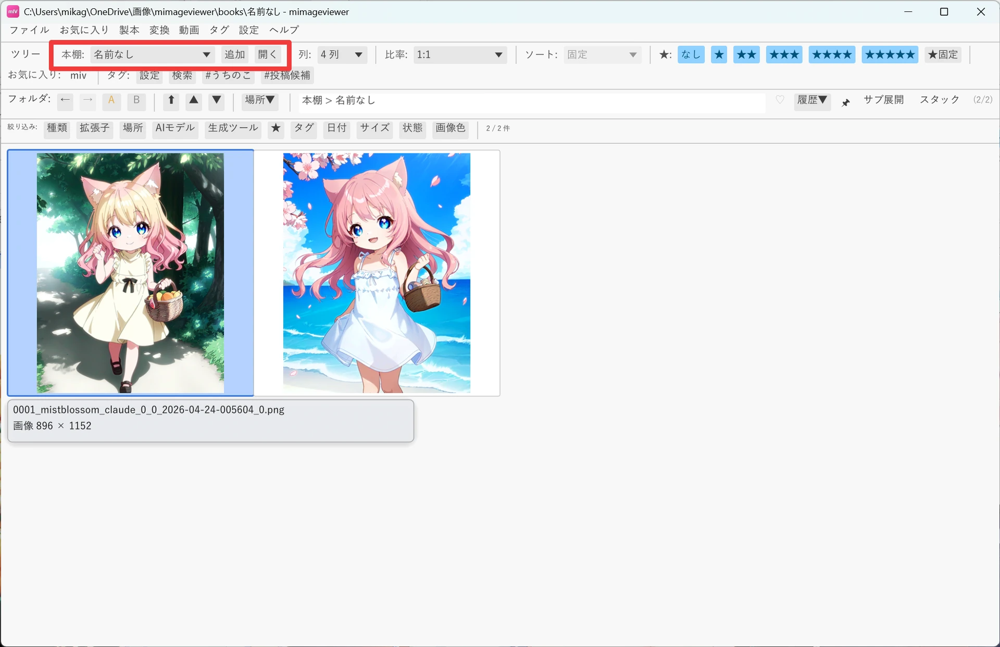
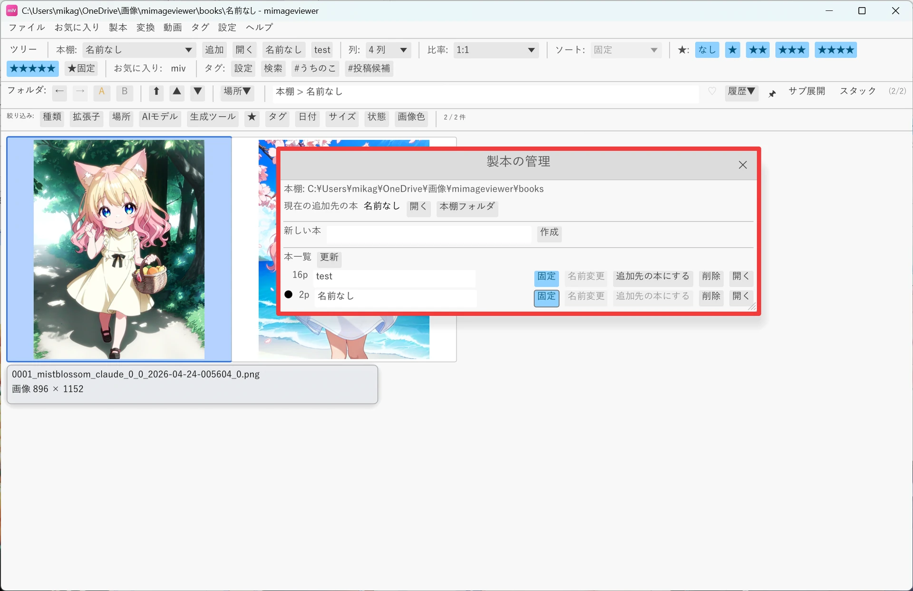
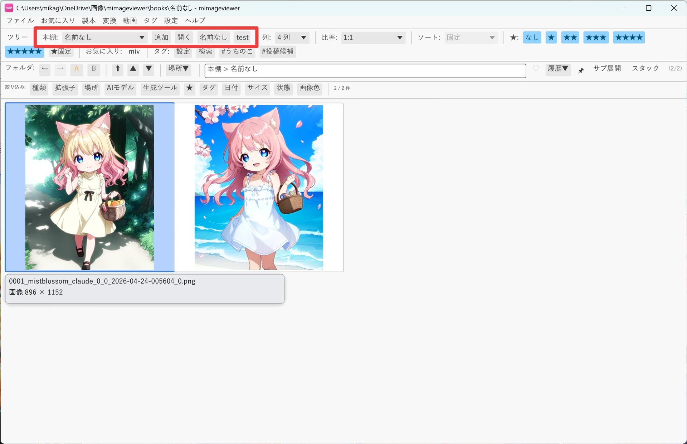
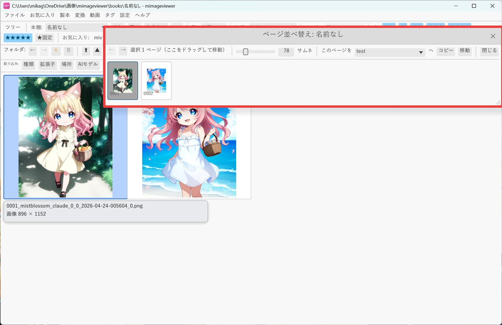

本棚に集めて 1 冊にまとめる
バラバラのフォルダに散らばった画像、ZIP・PDF の中の 1 ページ、動画の 1 フレーム、 クリップボード上の画像。出どころの違うページを 1 冊の本へ集めて、番号順の画像フォルダとして まとめて読み返せるようにする機能です。元ファイルへのリンクではなく、追加した時点のページを コピーして本棚に保存します。
本棚とページの集め方
本棚ルート直下の各フォルダが 1 冊の本です。ページは番号付きのファイル名で保存されるため、 本の中は常に番号順で表示されます。次に追加する先を「追加先の本」として選んでおくと、 あとは見つけたページを都度そこへ流し込んでいくだけです。
ページの追加元はグリッド（一覧）だけではありません。画像・動画のフルスクリーン表示中や、 他のアプリでコピーしたクリップボード画像からも、同じ「追加先の本」へ流し込めます。 どの経路でも、追加した時点のページがコピーされて追加先の本に入ります。
| 追加元 | 追加されるもの | 操作 |
|---|---|---|
| グリッド（一覧） | チェックした（またはカーソル位置の）画像・ZIP / PDF ページ | ツールバーの「追加」ボタン、製本メニュー「追加先の本に追加」、または Ctrl+B |
| 画像のフルスクリーン | 今表示しているページ | Ctrl+B |
| 動画のフルスクリーン | 今のフレーム（1 枚の画像として保存） | Ctrl+B |
| 他アプリからコピー | クリップボード上の画像 | 製本メニュー「クリップボードの画像を本に追加」 |
グリッドで Ctrl+B を押すと、チェック済みアイテム（なければカーソル位置の 1 件）が追加先の本へ入ります。 ツールバーに固定した本があれば、右クリックで直接その本へ追加することもできます（後述）。

追加先の本を切り替える
メニュー「製本」、またはツールバーの「本棚:」セクションから次の操作を行います。
- 追加先の本に追加：カーソル位置またはチェック済みの画像やページを、現在の追加先の本へ追加します。
- クリップボードの画像を本に追加：クリップボード上の画像を新しいページとして追加します。
- 追加先の本を開く：今の追加先の本をそのまま mImageViewer 内で開いて確認します。
- 製本の管理：本の作成・名前変更・削除、追加先の本の切り替えをここで行います。

よく使う本はツールバーに固定（クイック追加）しておくと便利です。「製本の管理」で各本の 「固定」ボタンを押すとツールバーにボタンとして並び、左クリックでその本を開き、 右クリックでカーソル位置・チェック済み・表示中のページをその本へ直接追加できます。 追加先の本を切り替えなくても、複数の本へ並行して仕分けられます。

本の中を並べ替える
本を開いた状態で「この本を並べ替え」を選ぶと、専用ウィンドウでページ順を編集できます。 小サムネイルをドラッグして挿入位置へ移動し、Ctrlクリックで複数選択、 Shiftクリックで範囲選択ができます。上部の本一覧を使えば、選択したページを 別の本へコピーまたは移動することもできます。
